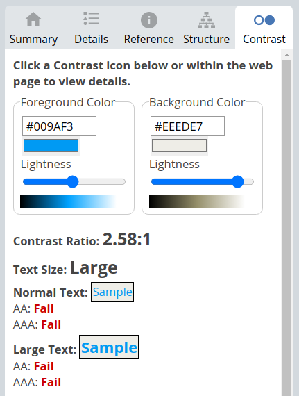

Accessibility
We have been thinking about accessibility throughout the process of creating the websites. Making sure that the website is usable by people. Even with permanent or temporary disabilities, all the information on the website should still be accessible and provides a good user experience for everyone.
Different screens
By using relatively sized elements, the site is responsive and works well on different screen resolutions. When the width is below or equal to 700px, we use media queries to change the layout. Font sizes and margins have been adjusted and the links in the main menu are made bigger for easier touch navigation such as on mobiles.
Colors
Setting up a color-palette with the use of CSS variables has made it simpler to stick to our selected colors and also provides a quick way of changing the color palette. We made sure that the contrast between the colors is good. While picking the color scheme, we made sure to keep in mind the different types of blind anomalies (types of color-blindness) which we tested.
Design
We went with a simplistic approach to the design, letting the information on the site be the main focus, and avoiding unnecessary and distracting elements. Following conventions for how elements are placed, for example putting the main menu at the top.
It's important that the whole page fits together, the pages noticeably belonging to one site. The menu bar is always at the top and the color scheme is the same throughout all the pages.
Coding choices
Readability
Elements were given descriptive names to make it easier to recognize the different parts of the page.
We kept a simple HTML structure for easier maintainability. As well as splitting the CSS up into multiple files; "style.css" is for general styles that apply for all pages, and separate CSS files for more specific styles for each page.
Re-used code
The header element has been used on every page. This page, the essay page and the info page all have a text article. The class "article-style" is used for all these pages, as the base-layout for these articles will be the same, even if they have some unique elements within the <article>-element
Semantic HTML
By using semantic tags we make sure that a screenreader can better understand the page and it is also good for SEO and readability of the code. It will also help to distribute information about the page, which helps the developer as well as the browser to understand what the page is about. For example we used <header>, <nav> for the navigation bar and <main> for the main contents of the page. For all the pages that have a typical article format, we use the <article>-element, so that screenreaders know that the content should make sense on its own.
Automated Testing
We have been using the automated test multiple times through the process, so we have not gotten many errors each time. Some code may initially be made as an experiment, and then be implemented. Errors can happen quickly and be difficult to spot after the codebase grows bigger. Using Automated tests has been a good tool to identify such errors.
Automated tests we used was AChecker, Wave, HTML validator and CSS validator. Where CSS-validator and AChecker did not give us any issues.
Navigation Bar
We had a blue color on the active links in the navbar to indicate which page the user is currently on, which at first glance seemed fine. However, the test we did with Wave gave us an error that the contrast was too low.
HTML Validator
We got some errors by the html validator that could have been difficult to spot without the automated test. For example a missing quote from one of the attributes in an svg image. Also, errors of tags that were not closed properly.